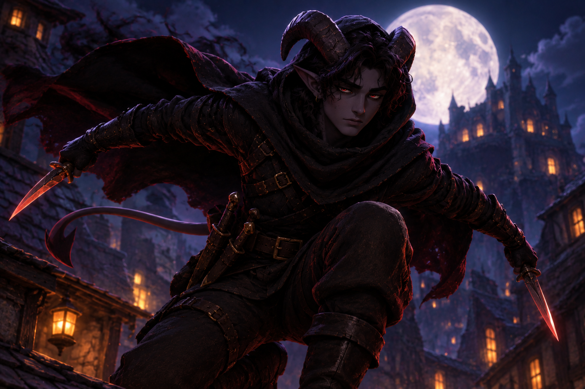

Tiefling Rogue

Feitan is a lean tiefling with curved dark horns, a long thin tail, and half-lidded red eyes. Like Mogneuss, he grew up an orphan, and it shows: he trusts very few people and keeps his feelings to himself.
He has a dark, nonchalant vibe and is almost always the least impressed person in the room. If something surprises him, you would never know it from his face. His tail, on the other hand, sometimes gives him away.
At the very first session, while Mogneuss and Bjorn were having a secret conversation at a tavern table, Feitan was leaning against the wall right next to them, listening to every word. Nobody noticed him until it was far too late.
Walking through a cursed, burned forest, charred hands burst out of the ground and grabbed Feitan by the ankles while a ghostly warrior watched from a ruined mansion. Feitan looked down at them, mostly annoyed, and reached for his dagger.